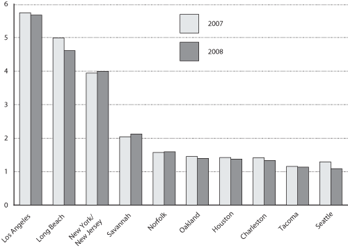

Excel | CSV | Table Version
(Millions of TEUs)
SOURCE: U.S. Department of Transportation, Research and Innovative Technology Administration, Bureau of Transportation Statistics, based on data from The Journal of Commerce, Port Import Export Reporting Service (PIERS), reported by Georgia Ports Authority in U.S. Port Rankings report, available at http://www.gaports.com/SalesandMarketing/MarketingBusinessDevelopment/GPABytheNumbers/tabid/435/Default.aspx, as of January 2009.